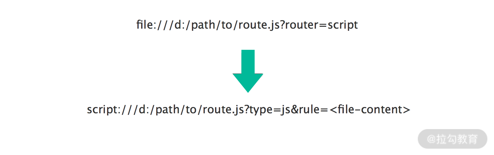
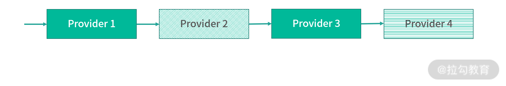
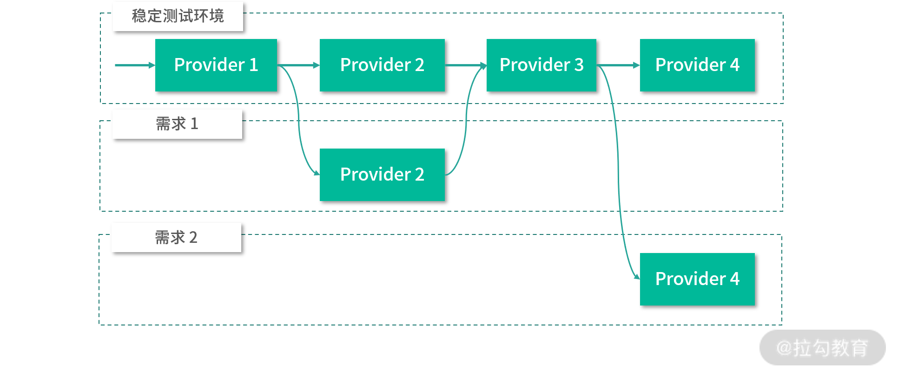
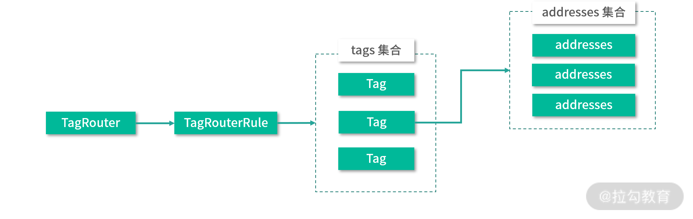
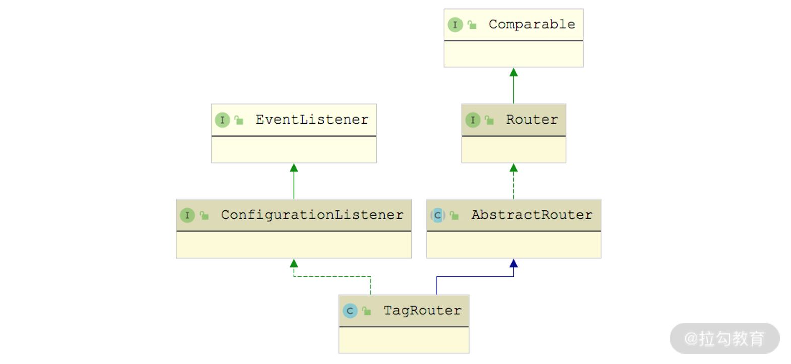
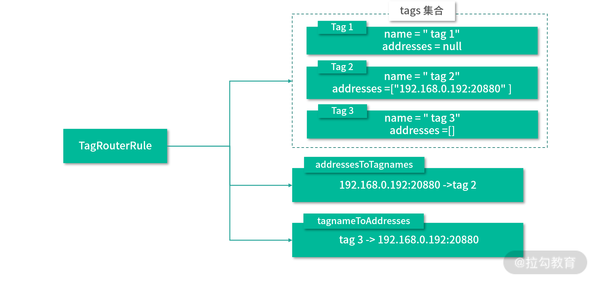
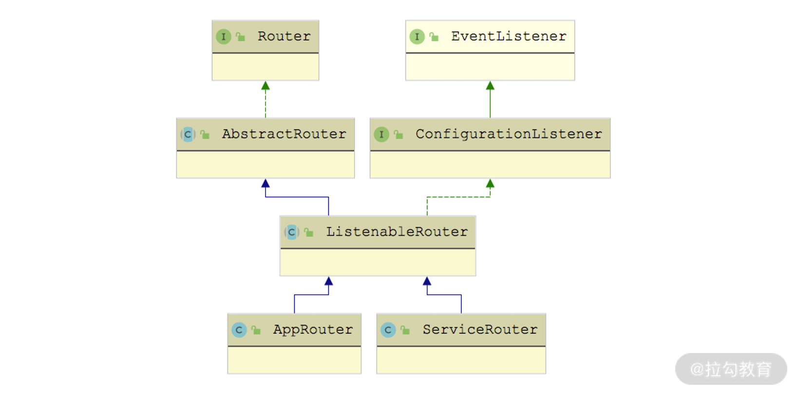

- 00 开篇词 深入掌握 Dubbo 原理与实现，提升你的职场竞争力.md.html
- 01 Dubbo 源码环境搭建：千里之行，始于足下.md.html
- 02 Dubbo 的配置总线：抓住 URL，就理解了半个 Dubbo.md.html
- 03 Dubbo SPI 精析，接口实现两极反转（上）.md.html
- 04 Dubbo SPI 精析，接口实现两极反转（下）.md.html
- 05 海量定时任务，一个时间轮搞定.md.html
- 06 ZooKeeper 与 Curator，求你别用 ZkClient 了（上）.md.html
- 07 ZooKeeper 与 Curator，求你别用 ZkClient 了（下）.md.html
- 08 代理模式与常见实现.md.html
- 09 Netty 入门，用它做网络编程都说好（上）.md.html
- 10 Netty 入门，用它做网络编程都说好（下）.md.html
- 11 简易版 RPC 框架实现（上）.md.html
- 12 简易版 RPC 框架实现（下）.md.html
- 13 本地缓存：降低 ZooKeeper 压力的一个常用手段.md.html
- 14 重试机制是网络操作的基本保证.md.html
- 15 ZooKeeper 注册中心实现，官方推荐注册中心实践.md.html
- 16 Dubbo Serialize 层：多种序列化算法，总有一款适合你.md.html
- 17 Dubbo Remoting 层核心接口分析：这居然是一套兼容所有 NIO 框架的设计？.md.html
- 18 Buffer 缓冲区：我们不生产数据，我们只是数据的搬运工.md.html
- 19 Transporter 层核心实现：编解码与线程模型一文打尽（上）.md.html
- 20 Transporter 层核心实现：编解码与线程模型一文打尽（下）.md.html
- 21 Exchange 层剖析：彻底搞懂 Request-Response 模型（上）.md.html
- 22 Exchange 层剖析：彻底搞懂 Request-Response 模型（下）.md.html
- 23 核心接口介绍，RPC 层骨架梳理.md.html
- 24 从 Protocol 起手，看服务暴露和服务引用的全流程（上）.md.html
- 25 从 Protocol 起手，看服务暴露和服务引用的全流程（下）.md.html
- 26 加餐：直击 Dubbo “心脏”，带你一起探秘 Invoker（上）.md.html
- 27 加餐：直击 Dubbo “心脏”，带你一起探秘 Invoker（下）.md.html
- 28 复杂问题简单化，代理帮你隐藏了多少底层细节？.md.html
- 29 加餐：HTTP 协议 + JSON-RPC，Dubbo 跨语言就是如此简单.md.html
- 30 Filter 接口，扩展 Dubbo 框架的常用手段指北.md.html
- 31 加餐：深潜 Directory 实现，探秘服务目录玄机.md.html
- 32 路由机制：请求到底怎么走，它说了算（上）.md.html
- 33 路由机制：请求到底怎么走，它说了算（下）.md.html
- 34 加餐：初探 Dubbo 动态配置的那些事儿.md.html
- 35 负载均衡：公平公正物尽其用的负载均衡策略，这里都有（上）.md.html
- 36 负载均衡：公平公正物尽其用的负载均衡策略，这里都有（下）.md.html
- 37 集群容错：一个好汉三个帮（上）.md.html
- 38 集群容错：一个好汉三个帮（下）.md.html
- 39 加餐：多个返回值不用怕，Merger 合并器来帮忙.md.html
- 40 加餐：模拟远程调用，Mock 机制帮你搞定.md.html
- 41 加餐：一键通关服务发布全流程.md.html
- 42 加餐：服务引用流程全解析.md.html
- 43 服务自省设计方案：新版本新方案.md.html
- 44 元数据方案深度剖析，如何避免注册中心数据量膨胀？.md.html
- 45 加餐：深入服务自省方案中的服务发布订阅（上）.md.html
- 46 加餐：深入服务自省方案中的服务发布订阅（下）.md.html
- 47 配置中心设计与实现：集中化配置 and 本地化配置，我都要（上）.md.html
- 48 配置中心设计与实现：集中化配置 and 本地化配置，我都要（下）.md.html
- 49 结束语 认真学习，缩小差距.md.html
33 路由机制：请求到底怎么走，它说了算（下）
在上一课时，我们介绍了 Router 接口的基本功能以及 RouterChain 加载多个 Router 的实现，之后介绍了 ConditionRouter 这个类对条件路由规则的处理逻辑以及 ScriptRouter 这个类对脚本路由规则的处理逻辑。本课时我们继续上一课时的内容，介绍剩余的三个 Router 接口实现类。
FileRouterFactory
FileRouterFactory 是 ScriptRouterFactory 的装饰器，其扩展名为 file，FileRouterFactory 在 ScriptRouterFactory 基础上增加了读取文件的能力。我们可以将 ScriptRouter 使用的路由规则保存到文件中，然后在 URL 中指定文件路径，FileRouterFactory 从中解析到该脚本文件的路径并进行读取，调用 ScriptRouterFactory 去创建相应的 ScriptRouter 对象。
下面我们来看 FileRouterFactory 对 getRouter() 方法的具体实现，其中完成了 file 协议的 URL 到 script 协议 URL 的转换，如下是一个转换示例，首先会将 file:// 协议转换成 script:// 协议，然后会添加 type 参数和 rule 参数，其中 type 参数值根据文件后缀名确定，该示例为 js，rule 参数值为文件内容。

我们可以再结合接下来这个示例分析 getRouter() 方法的具体实现：
public Router getRouter(URL url) {
// 默认使用script协议
String protocol = url.getParameter(ROUTER_KEY, ScriptRouterFactory.NAME);
String type = null;
String path = url.getPath();
if (path != null) { // 获取脚本文件的语言类型
int i = path.lastIndexOf('.');
if (i > 0) {
type = path.substring(i + 1);
}
}
// 读取脚本文件中的内容
String rule = IOUtils.read(new FileReader(new File(url.getAbsolutePath())));
boolean runtime = url.getParameter(RUNTIME_KEY, false);
// 创建script协议的URL
URL script = URLBuilder.from(url)
.setProtocol(protocol)
.addParameter(TYPE_KEY, type)
.addParameter(RUNTIME_KEY, runtime)
.addParameterAndEncoded(RULE_KEY, rule)
.build();
// 获取script对应的Router实现
return routerFactory.getRouter(script);
}
TagRouterFactory & TagRouter
TagRouterFactory 作为 RouterFactory 接口的扩展实现，其扩展名为 tag。但是需要注意的是，TagRouterFactory 与上一课时介绍的 ConditionRouterFactory、ScriptRouterFactory 的不同之处在于，它是通过继承 CacheableRouterFactory 这个抽象类，间接实现了 RouterFactory 接口。
CacheableRouterFactory 抽象类中维护了一个 ConcurrentMap 集合（routerMap 字段）用来缓存 Router，其中的 Key 是 ServiceKey。在 CacheableRouterFactory 的 getRouter() 方法中，会优先根据 URL 的 ServiceKey 查询 routerMap 集合，查询失败之后会调用 createRouter() 抽象方法来创建相应的 Router 对象。在 TagRouterFactory.createRouter() 方法中，创建的自然就是 TagRouter 对象了。
基于 Tag 的测试环境隔离方案
通过 TagRouter，我们可以将某一个或多个 Provider 划分到同一分组，约束流量只在指定分组中流转，这样就可以轻松达到流量隔离的目的，从而支持灰度发布等场景。
目前，Dubbo 提供了动态和静态两种方式给 Provider 打标签，其中动态方式就是通过服务治理平台动态下发标签，静态方式就是在 XML 等静态配置中打标签。Consumer 端可以在 RpcContext 的 attachment 中添加 request.tag 附加属性，注意保存在 attachment 中的值将会在一次完整的远程调用中持续传递，我们只需要在起始调用时进行设置，就可以达到标签的持续传递。
了解了 Tag 的基本概念和功能之后，我们再简单介绍一个 Tag 的使用示例。
在实际的开发测试中，一个完整的请求会涉及非常多的 Provider，分属不同团队进行维护，这些团队每天都会处理不同的需求，并在其负责的 Provider 服务中进行修改，如果所有团队都使用一套测试环境，那么测试环境就会变得很不稳定。如下图所示，4 个 Provider 分属不同的团队管理，Provider 2 和 Provider 4 在测试环境测试，部署了有 Bug 的版本，这样就会导致整个测试环境无法正常处理请求，在这样一个不稳定的测试环境中排查 Bug 是非常困难的，因为可能排查到最后，发现是别人的 Bug。

不同状态的 Provider 节点
为了解决上述问题，我们可以针对每个需求分别独立出一套测试环境，但是这个方案会占用大量机器，前期的搭建成本以及后续的维护成本也都非常高。
下面是一个通过 Tag 方式实现环境隔离的架构图，其中，需求 1 对 Provider 2 的请求会全部落到有需求 1 标签的 Provider 上，其他 Provider 使用稳定测试环境中的 Provider；需求 2 对 Provider 4 的请求会全部落到有需求 2 标签的 Provider 4 上，其他 Provider 使用稳定测试环境中的 Provider。

依赖 Tag 实现的测试环境隔离方案
在一些特殊场景中，会有 Tag 降级的场景，比如找不到对应 Tag 的 Provider，会按照一定的规则进行降级。如果在 Provider 集群中不存在与请求 Tag 对应的 Provider 节点，则默认将降级请求 Tag 为空的 Provider；如果希望在找不到匹配 Tag 的 Provider 节点时抛出异常的话，我们需设置 request.tag.force = true。
如果请求中的 request.tag 未设置，只会匹配 Tag 为空的 Provider，也就是说即使集群中存在可用的服务，若 Tag 不匹配也就无法调用。一句话总结，携带 Tag 的请求可以降级访问到无 Tag 的 Provider，但不携带 Tag 的请求永远无法访问到带有 Tag 的 Provider。
TagRouter
下面我们再来看 TagRouter 的具体实现。在 TagRouter 中持有一个 TagRouterRule 对象的引用，在 TagRouterRule 中维护了一个 Tag 集合，而在每个 Tag 对象中又都维护了一个 Tag 的名称，以及 Tag 绑定的网络地址集合，如下图所示：

TagRouter、TagRouterRule、Tag 与 address 映射关系图
另外，在 TagRouterRule 中还维护了 addressToTagnames、tagnameToAddresses 两个集合（都是 Map<String, List<String>> 类型），分别记录了 Tag 名称到各个 address 的映射以及 address 到 Tag 名称的映射。在 TagRouterRule 的 init() 方法中，会根据 tags 集合初始化这两个集合。
了解了 TagRouterRule 的基本构造之后，我们继续来看 TagRouter 构造 TagRouterRule 的过程。TagRouter 除了实现了 Router 接口之外，还实现了 ConfigurationListener 接口，如下图所示：

TagRouter 继承关系图
ConfigurationListener 用于监听配置的变化，其中就包括 TagRouterRule 配置的变更。当我们通过动态更新 TagRouterRule 配置的时候，就会触发 ConfigurationListener 接口的 process() 方法，TagRouter 对 process() 方法的实现如下：
public synchronized void process(ConfigChangedEvent event) {
// DELETED事件会直接清空tagRouterRule
if (event.getChangeType().equals(ConfigChangeType.DELETED)) {
this.tagRouterRule = null;
} else { // 其他事件会解析最新的路由规则，并记录到tagRouterRule字段中
this.tagRouterRule = TagRuleParser.parse(event.getContent());
}
}
我们可以看到，如果是删除配置的操作，则直接将 tagRouterRule 设置为 null，如果是修改或新增配置，则通过 TagRuleParser 解析传入的配置，得到对应的 TagRouterRule 对象。TagRuleParser 可以解析 yaml 格式的 TagRouterRule 配置，下面是一个配置示例：
force: false
runtime: true
enabled: false
priority: 1
key: demo-provider
tags:
- name: tag1
addresses: null
- name: tag2
addresses: ["30.5.120.37:20880"]
- name: tag3
addresses: []
经过 TagRuleParser 解析得到的 TagRouterRule 结构，如下所示：

TagRouterRule 结构图
除了上图展示的几个集合字段，TagRouterRule 还从 AbstractRouterRule 抽象类继承了一些控制字段，后面介绍的 ConditionRouterRule 也继承了 AbstractRouterRule。
AbstractRouterRule继承关系图
AbstractRouterRule 中核心字段的具体含义大致可总结为如下。
- key（string 类型）、scope（string 类型）：key 明确规则体作用在哪个服务或应用。scope 为 service 时，key 由 [{group}:]{service}[:{version}] 构成；scope 为 application 时，key 为 application 的名称。
- rawRule（string 类型）：记录了路由规则解析前的原始字符串配置。
- runtime（boolean 类型）：表示是否在每次调用时执行该路由规则。如果设置为 false，则会在 Provider 列表变更时预先执行并缓存结果，调用时直接从缓存中获取路由结果。
- force（boolean 类型）：当路由结果为空时，是否强制执行，如果不强制执行，路由结果为空的路由规则将自动失效。该字段默认值为 false。
- valid（boolean 类型）：用于标识解析生成当前 RouterRule 对象的配置是否合法。
- enabled（boolean 类型）：标识当前路由规则是否生效。
- priority（int 类型）：用于表示当前 RouterRule 的优先级。
- dynamic（boolean 类型）：表示该路由规则是否为持久数据，当注册方退出时，路由规则是否依然存在。
我们可以看到，AbstractRouterRule 中的核心字段与前面的示例配置是一一对应的。
我们知道，Router 最终目的是要过滤符合条件的 Invoker 对象，下面我们一起来看 TagRouter 是如何使用 TagRouterRule 路由逻辑进行 Invoker 过滤的，大致步骤如下。
- 如果 invokers 为空，直接返回空集合。
- 检查关联的 tagRouterRule 对象是否可用，如果不可用，则会直接调用 filterUsingStaticTag() 方法进行过滤，并返回过滤结果。在 filterUsingStaticTag() 方法中，会比较请求携带的 tag 值与 Provider URL 中的 tag 参数值。
- 获取此次调用的 tag 信息，这里会尝试从 Invocation 以及 URL 的参数中获取。
- 如果此次请求指定了 tag 信息，则首先会获取 tag 关联的 address 集合。
- 如果 address 集合不为空，则根据该 address 集合中的地址，匹配出符合条件的 Invoker 集合。如果存在符合条件的 Invoker，则直接将过滤得到的 Invoker 集合返回；如果不存在，就会根据 force 配置决定是否返回空 Invoker 集合。
- 如果 address 集合为空，则会将请求携带的 tag 值与 Provider URL 中的 tag 参数值进行比较，匹配出符合条件的 Invoker 集合。如果存在符合条件的 Invoker，则直接将过滤得到的 Invoker 集合返回；如果不存在，就会根据 force 配置决定是否返回空 Invoker 集合。
- 如果 force 配置为 false，且符合条件的 Invoker 集合为空，则返回所有不包含任何 tag 的 Provider 列表。
- 如果此次请求未携带 tag 信息，则会先获取 TagRouterRule 规则中全部 tag 关联的 address 集合。如果 address 集合不为空，则过滤出不在 address 集合中的 Invoker 并添加到结果集合中，最后，将 Provider URL 中的 tag 值与 TagRouterRule 中的 tag 名称进行比较，得到最终的 Invoker 集合。
上述流程的具体实现是在 TagRouter.route() 方法中，如下所示：
public <T> List<Invoker<T>> route(List<Invoker<T>> invokers, URL url, Invocation invocation) throws RpcException {
... // 如果invokers为空，直接返回空集合(略)
final TagRouterRule tagRouterRuleCopy = tagRouterRule;
if (tagRouterRuleCopy == null || !tagRouterRuleCopy.isValid() || !tagRouterRuleCopy.isEnabled()) {
return filterUsingStaticTag(invokers, url, invocation);
}
// 检查关联的tagRouterRule对象是否可用，如果不可用，则会直接调用filterUsingStaticTag() 方法进行过滤
List<Invoker<T>> result = invokers;
// 获取此次调用的tag信息，尝试从Invocation以及URL中获取
String tag = StringUtils.isEmpty(invocation.getAttachment(TAG_KEY)) ? url.getParameter(TAG_KEY) :
invocation.getAttachment(TAG_KEY);
if (StringUtils.isNotEmpty(tag)) { // 此次请求一个特殊的tag
// 获取tag关联的address集合
List<String> addresses = tagRouterRuleCopy.getTagnameToAddresses().get(tag);
if (CollectionUtils.isNotEmpty(addresses)) {
// 根据上面的address集合匹配符合条件的Invoker
result = filterInvoker(invokers, invoker -> addressMatches(invoker.getUrl(), addresses));
// 如果存在符合条件的Invoker，则直接将过滤得到的Invoker集合返回
// 如果不存在符合条件的Invoker，根据force配置决定是否返回空Invoker集合
if (CollectionUtils.isNotEmpty(result) || tagRouterRuleCopy.isForce()) {
return result;
}
} else {
// 如果 address 集合为空，则会将请求携带的 tag 与 Provider URL 中的 tag 参数值进行比较，匹配出符合条件的 Invoker 集合。
result = filterInvoker(invokers, invoker -> tag.equals(invoker.getUrl().getParameter(TAG_KEY)));
}
if (CollectionUtils.isNotEmpty(result) || isForceUseTag(invocation)) {
return result; // 存在符合条件的Invoker或是force配置为true
}else { // 如果 force 配置为 false，且符合条件的 Invoker 集合为空，则返回所有不包含任何 tag 的 Provider 列表。
List<Invoker<T>> tmp = filterInvoker(invokers, invoker -> addressNotMatches(invoker.getUrl(),
tagRouterRuleCopy.getAddresses()));
return filterInvoker(tmp, invoker -> StringUtils.isEmpty(invoker.getUrl().getParameter(TAG_KEY)));
}
} else {
// 如果此次请求未携带 tag 信息，则会先获取 TagRouterRule 规则中全部 tag 关联的 address 集合。
List<String> addresses = tagRouterRuleCopy.getAddresses();
if (CollectionUtils.isNotEmpty(addresses)) {
// 如果 address 集合不为空，则过滤出不在 address 集合中的 Invoker 并添加到结果集合中。
result = filterInvoker(invokers, invoker -> addressNotMatches(invoker.getUrl(), addresses));
if (CollectionUtils.isEmpty(result)) {
return result;
}
}
// 如果不存在符合条件的 Invoker 或是 address 集合为空，则会将请求携带的 tag 与 Provider URL 中的 tag 参数值进行比较，得到最终的 Invoker 集合。
return filterInvoker(result, invoker -> {
String localTag = invoker.getUrl().getParameter(TAG_KEY);
return StringUtils.isEmpty(localTag) || !tagRouterRuleCopy.getTagNames().contains(localTag);
});
}
}
ServiceRouter & AppRouter
除了前文介绍的 TagRouterFactory 继承了 CacheableRouterFactory 之外，ServiceRouterFactory 也继承 CachabelRouterFactory，具有了缓存的能力，具体继承关系如下图所示：

CacheableRouterFactory 继承关系图
ServiceRouterFactory 创建的 Router 实现是 ServiceRouter，与 ServiceRouter 类似的是 AppRouter，两者都继承了 ListenableRouter 抽象类（虽然 ListenableRouter 是个抽象类，但是没有抽象方法留给子类实现），继承关系如下图所示：

ListenableRouter 继承关系图
ListenableRouter 在 ConditionRouter 基础上添加了动态配置的能力，ListenableRouter 的 process() 方法与 TagRouter 中的 process() 方法类似，对于 ConfigChangedEvent.DELETE 事件，直接清空 ListenableRouter 中维护的 ConditionRouterRule 和 ConditionRouter 集合的引用；对于 ADDED、UPDATED 事件，则通过 ConditionRuleParser 解析事件内容，得到相应的 ConditionRouterRule 对象和 ConditionRouter 集合。这里的 ConditionRuleParser 同样是以 yaml 文件的格式解析 ConditionRouterRule 的相关配置。ConditionRouterRule 中维护了一个 conditions 集合（List<String> 类型），记录了多个 Condition 路由规则，对应生成多个 ConditionRouter 对象。
整个解析 ConditionRouterRule 的过程，与前文介绍的解析 TagRouterRule 的流程类似，这里不再赘述。
在 ListenableRouter 的 route() 方法中，会遍历全部 ConditionRouter 过滤出符合全部路由条件的 Invoker 集合，具体实现如下：
public <T> List<Invoker<T>> route(List<Invoker<T>> invokers, URL url, Invocation invocation) throws RpcException {
if (CollectionUtils.isEmpty(invokers) || conditionRouters.size() == 0) {
return invokers; // 检查边界条件，直接返回invokers集合
}
for (Router router : conditionRouters) { // 路由规则进行过滤
invokers = router.route(invokers, url, invocation);
}
return invokers;
}
ServiceRouter 和 AppRouter 都是简单地继承了 ListenableRouter 抽象类，且没有覆盖 ListenableRouter 的任何方法，两者只有以下两点区别。
- 一个是 priority 字段值不同。ServiceRouter 为 140，AppRouter 为 150，也就是说 ServiceRouter 要先于 AppRouter 执行。
- 另一个是获取 ConditionRouterRule 配置的 Key 不同。ServiceRouter 使用的 RuleKey 是由 {interface}:[version]:[group] 三部分构成，获取的是一个服务对应的 ConditionRouterRule。AppRouter 使用的 RuleKey 是 URL 中的 application 参数值，获取的是一个服务实例对应的 ConditionRouterRule。
总结
本课时我们是紧接上一课时的内容，继续介绍了剩余 Router 接口实现的内容。
我们首先介绍了基于文件的 FileRouter 实现，其底层会依赖上一课时介绍的 ScriptRouter；接下来又讲解了基于 Tag 的测试环境隔离方案，以及如何基于 TagRouter 实现该方案，同时深入分析了 TagRouter 的核心实现；最后我们还介绍了 ListenableRouter 抽象类以及 ServerRouter 和 AppRouter 两个实现，它们是在条件路由的基础上添加了动态变更路由规则的能力，同时区分了服务级别和服务实例级别的配置。